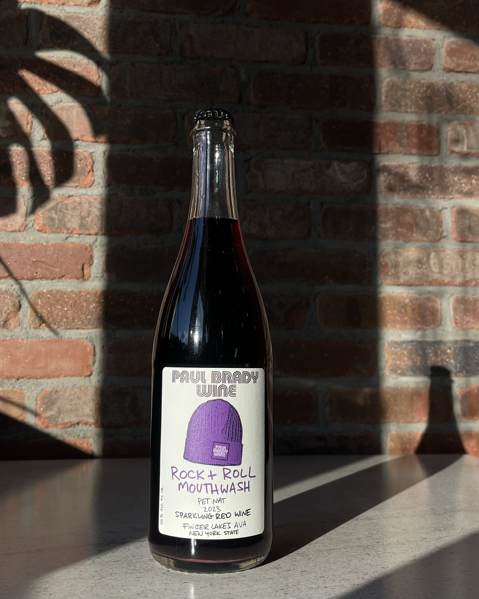
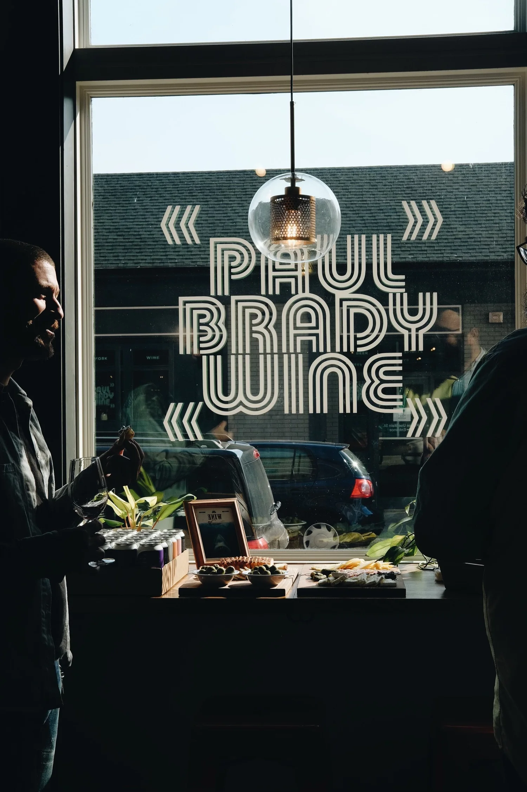
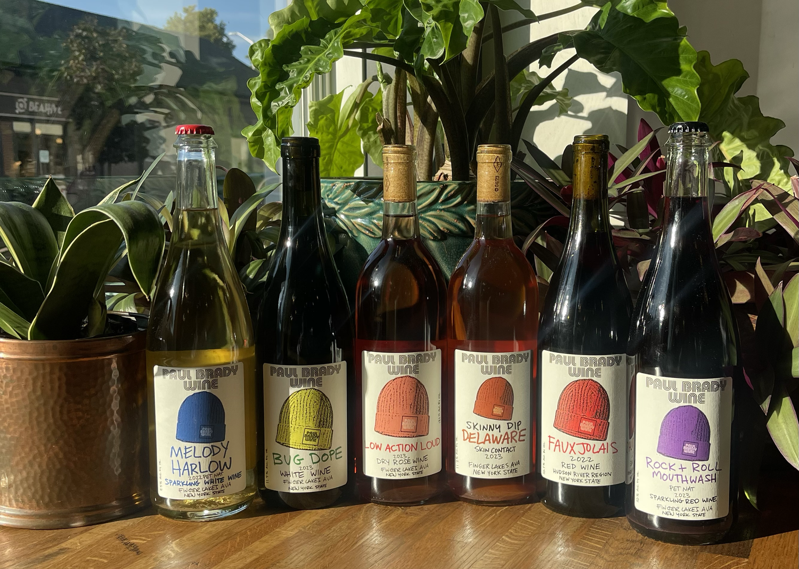
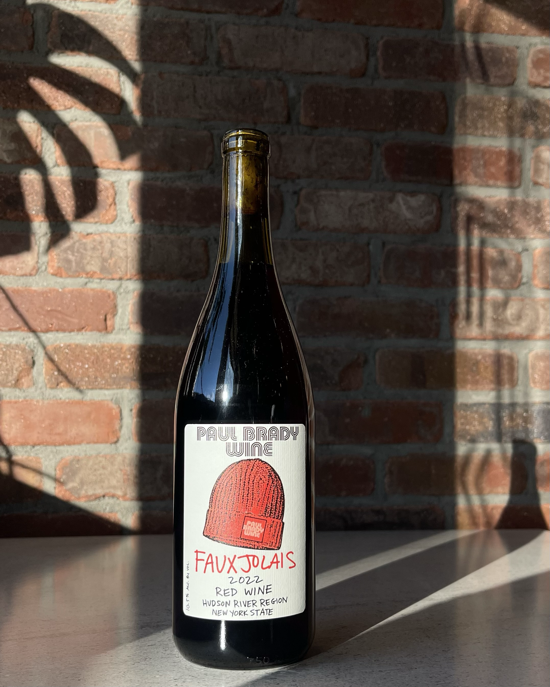
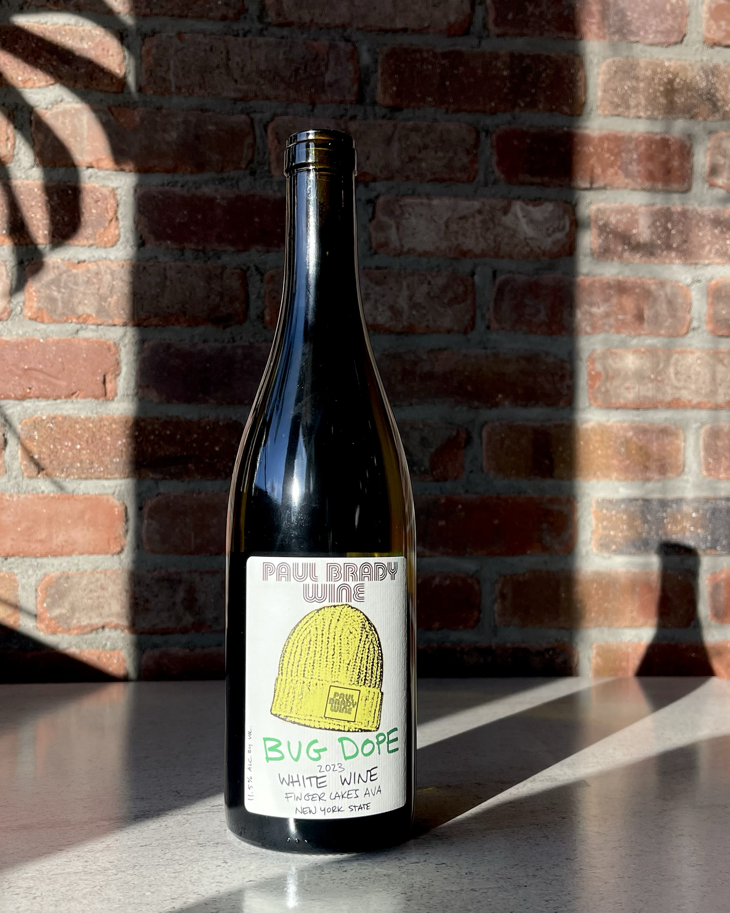
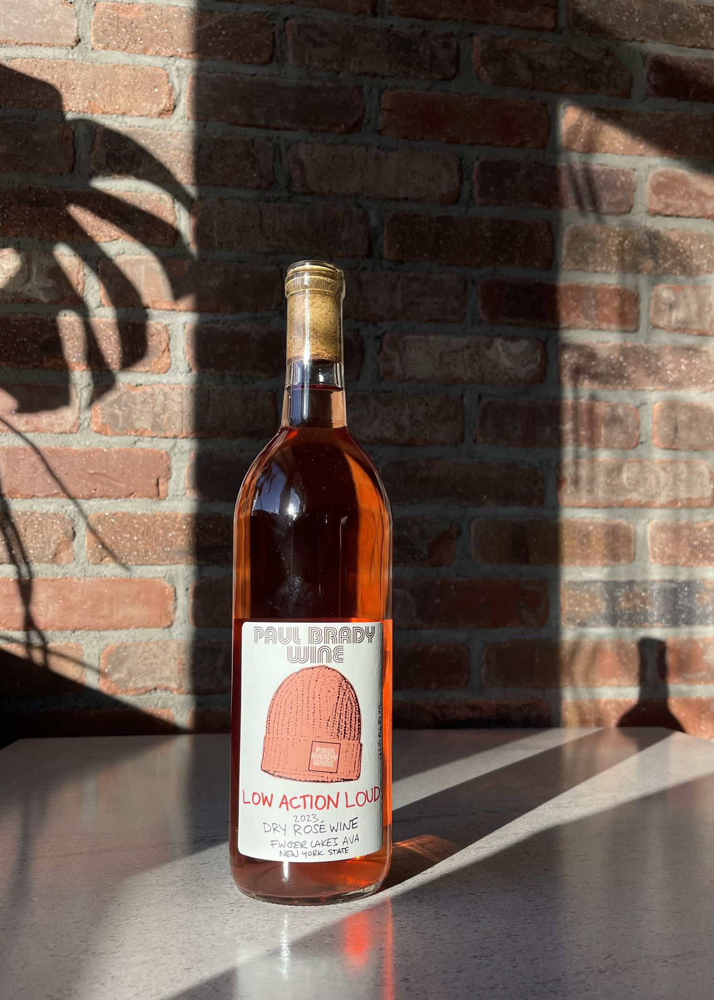
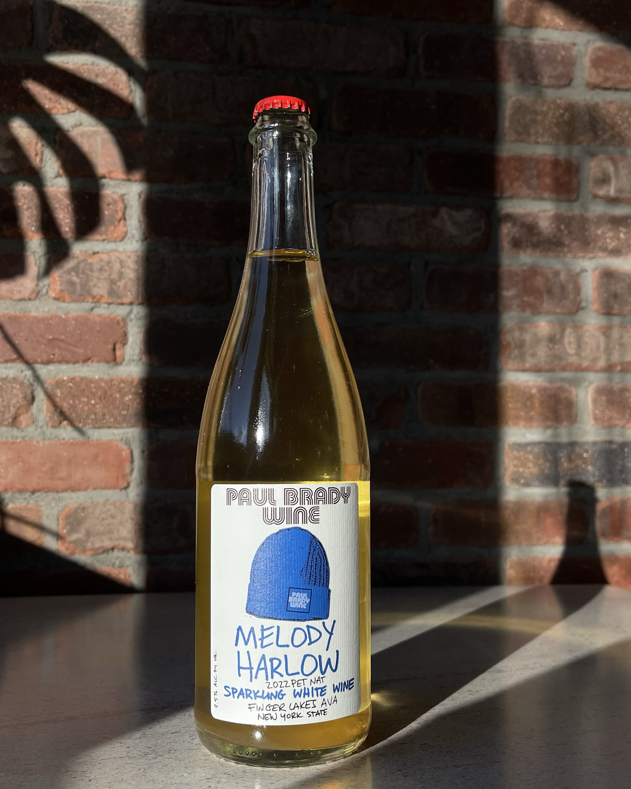
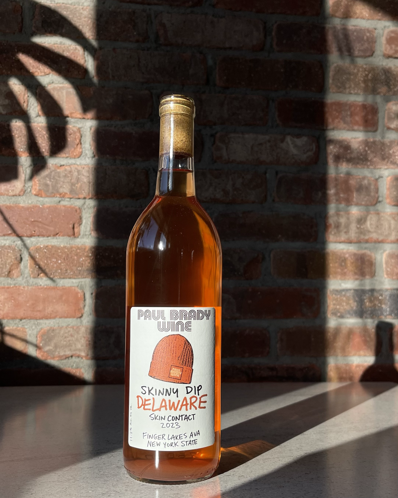
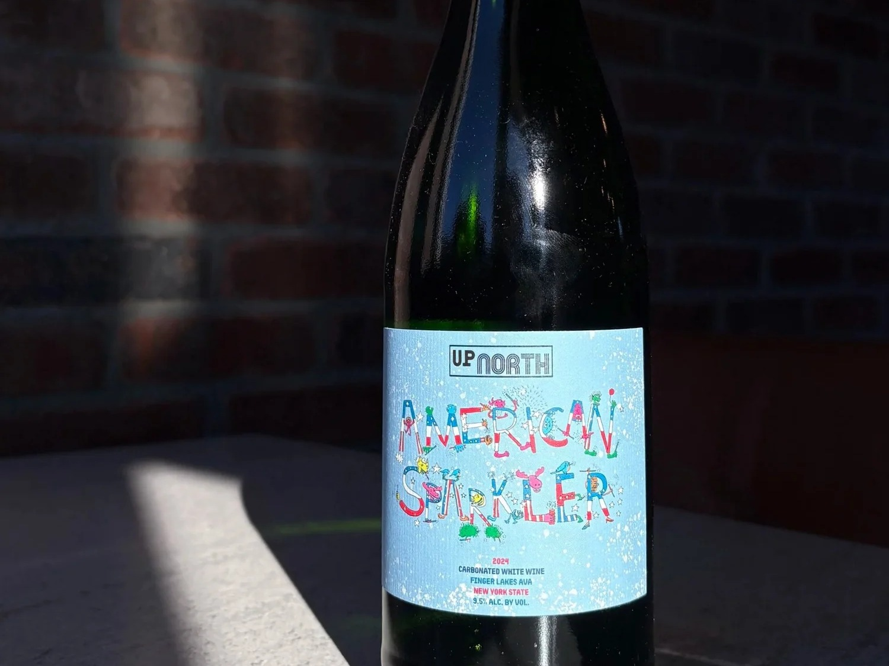
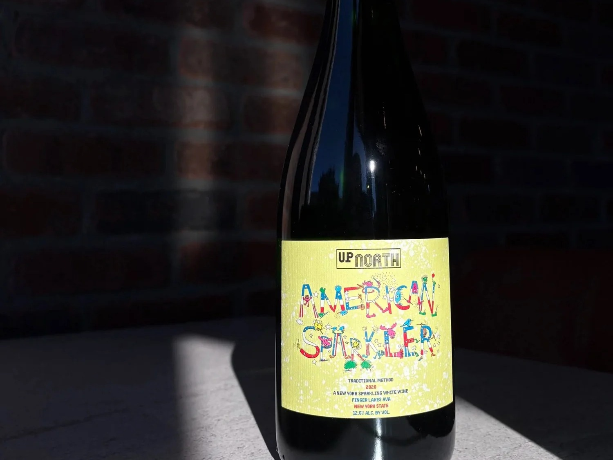

Rock and Roll Mouthwash
A dry Lambrusco-style pet nat made with Finger Lakes winemaker Ben Ricardi of Osmote.
Beacon, New York
Paul Brady Wine is a wine shop, bar, and tasting room celebrating craft beverages from across New York State.

Visit
Every product at Paul Brady Wine, from wines and beers to ciders and spirits, is sourced from New York State. Everything served at the bar is available to take home by the bottle.
Summer Hours
Sunday - Thursday 1 PM - 9 PM
Friday + Saturday 1 PM - 10 PM
Shop

“The wines are really great, and the space is amazing. I’m truly so inspired by a place like this - NY people serving NY products!”
Zach Siegel, Gramercy Tavern Bar Manager, 2018-2020PBW Wines

A dry Lambrusco-style pet nat made with Finger Lakes winemaker Ben Ricardi of Osmote.

A natural red nod to Beaujolais, made with Wild Arc Farm winemaker Todd Cavallo.

A bone-dry white blend with Gewurztraminer, Chardonnay, and Riesling.

A dry rose made with Anthony Road Wine Company from Blaufrankisch and Cabernet Franc.

A sparkling white pet nat made from the uniquely New York Melody grape.

An orange wine made with Peter Becraft of Anthony Road and grapes from Wagner Vineyards.
Up North

Refreshing, northern-Italian inspired bubbles for spritzes, brunch, or drinking on its own.

An Alsace-inspired traditional-method sparkler with fine bubbles and a refined texture.
FAQ
A shop and bar celebrating wines, beers, ciders, and spirits produced in New York State.
344 Main Street in Beacon, New York. The entrance is a few steps north of Main on Eliza.
Yes. The bar offers PBW wine flights, by-the-glass pours, cocktails, beer, cider, spirits, and food.